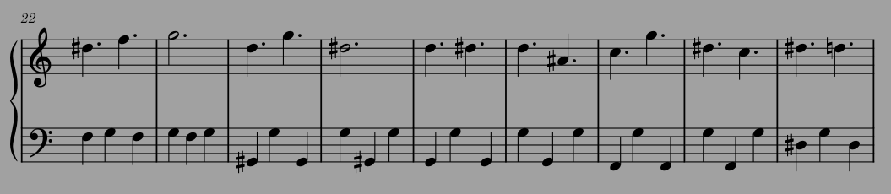

Music in video games: How to make music for a non-linear medium
Horizontal Music in Monkey Island 2
Video games and music go hand-in-hand. Try to think of a game released in the last 20 years without some form of music and I bet it will take you some time, if you can think of one at all.
Movies and tv shows have a similar connection to music, but what makes video games unique is that the music in them has to be dynamic. While a movie composer can write for a specific moment, and time the music perfectly, a video game composer has no idea when the player will do any given action. Because of that, composers have to get creative. This blog will explore some of the different approaches composers and developers take with various games to make the music feel in-sync with the player’s actions.
Let's start with the simple stuff first. Perhaps the easiest way to make music “dynamic” is to just make a loop. This is what most games do and it’s an easy way to ensure that music will play indefinitely. While there’s nothing wrong with this approach in moderation, it can lead to some pretty annoying repetition, and it doesn’t really allow for much variation.
This is where horizontal resequencing and vertical reorchestration come in. These are the two fundamental basics of dynamic music, and despite the long words they’re very easy to understand. The names come from how music is generally laid out:

From left to right (horizontally), different notes are laid out over time. So, horizontal resequencing is just transitioning between different segments of music, and will be what we focus on for this first post.
The simplest use of horizontal resequencing is cuts. The original Super Mario Bros., for example, just cuts the music out as soon as you end a level, before starting the level end theme. As hardware improved, crossfades could be used instead to make transitions less jarring. Sticking with Mario games, Super Mario 64 fades any background music out when you enter a level.